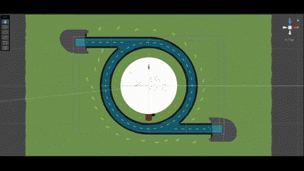
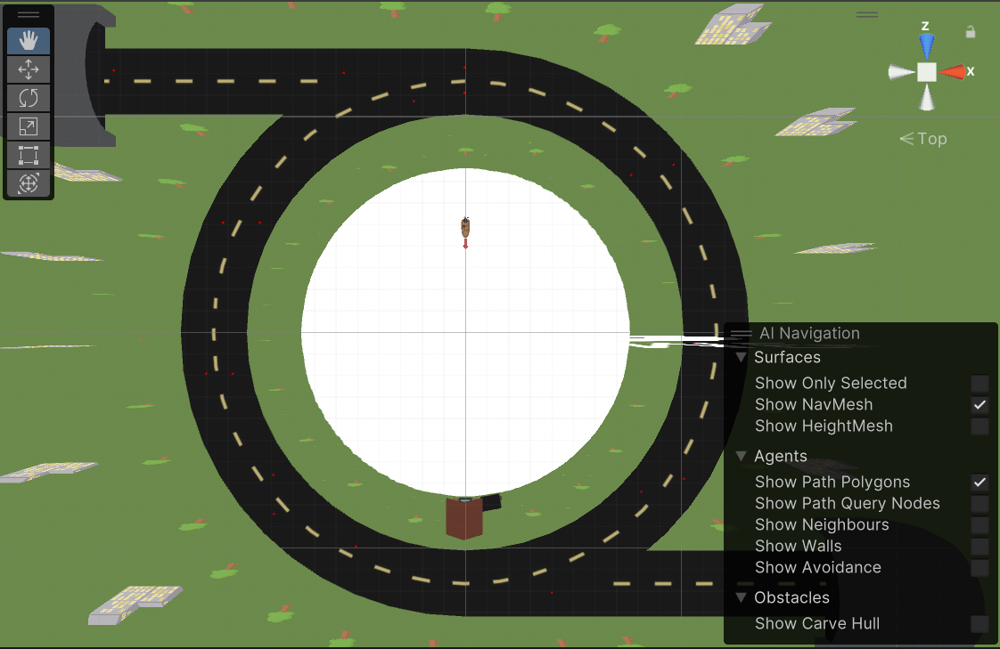
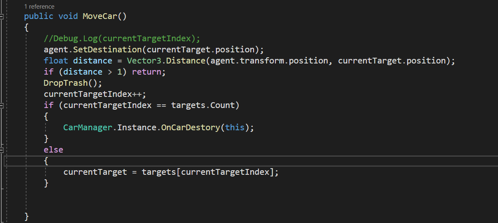
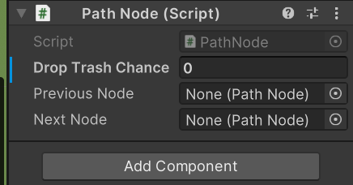
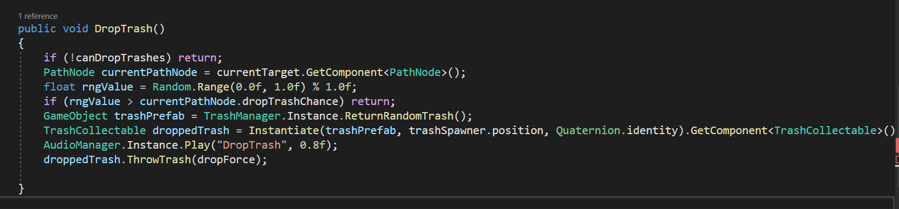
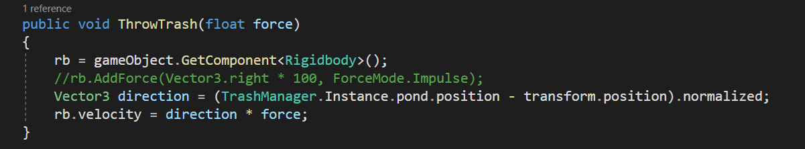
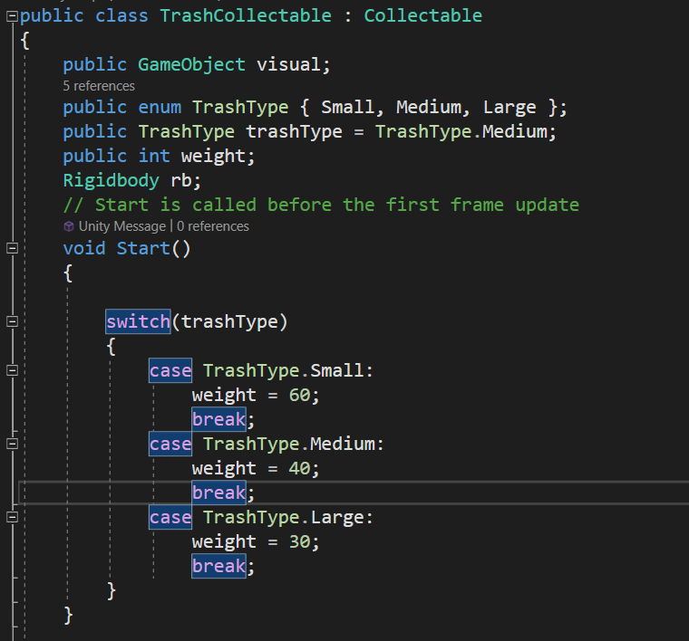
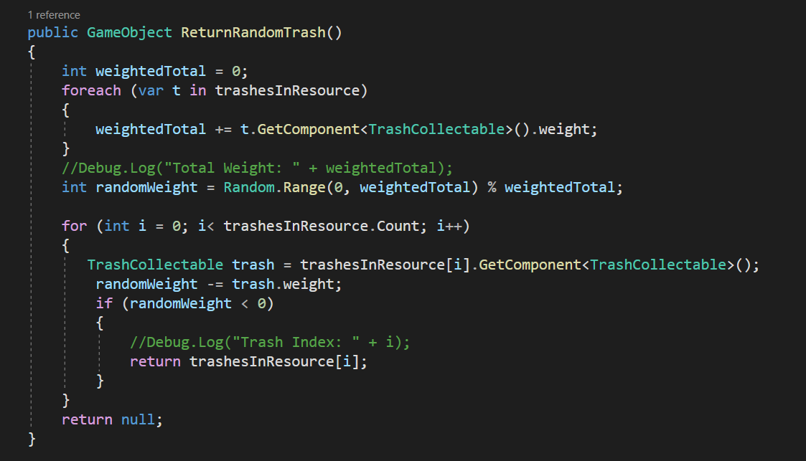

In Untitled Fisher Game, players control the fisherman on the boat where they are trying to
catch as much
fish as possible. However, cars passing by are throwing trash into the lake so you are also tasked
with cleaning the lake to meet the fish quota before time runs out.
This SVC Hackathon (Game Jam Game) project was completed within 72 hours, and our team got 2nd
place. We are a four-person team, and I worked as a programmer and designer.
In programming, I was responsible for the Viechle and Trash throwing system, UI programming, and
Audio implementation.
What part did I do?
Vehicle Movement
In the game's background environment, two tunnels facilitate the spawning of vehicles traveling
in opposite directions. These vehicles have a unique behavior: dispense trash into a lake while
navigating the terrain and vanishing after completing a full lap. I used Unity's AI NavMesh
Pathfinding features to achieve this automated driving behavior.
To enable the vehicles to auto-drive on the right road, I created a NavMesh on the road and
assigned a Mesh Agent to each vehicle. The NavMesh guides the vehicle along a designated path to
a predefined destination. However, the NavMesh is limited, as it always finds the shortest
distance between the starting position and the destination, which can’t apply on a circular
path. Addressing this, I implemented a strategy to manually guide the vehicle along a circular
route.

My solution is setting multiple path nodes as temp destinations to guide the vehicle toward its
final
objective progressively. This was accomplished by segmenting the road into distinct checkpoints.
As the vehicle successfully passed each checkpoint (pathNode), its destination was dynamically
updated to the subsequent checkpoint on the NavMesh map.

This iterative process continued until
the vehicle reached the final checkpoint, signaling the completion of one full lap.

Viechle Trash Throwing
In implementing the vehicle randomly generates trash and dumps trash, I have tied the generate
chance with path nodes along the vehicle's path. The logic is that each path node has a preset
trash-throwing chance variable, and as a vehicle passes a node, its controller will assess this
chance variable.

Subsequently, based on this chance, the vehicle's controller will decide
whether to execute the trash disposal action or not. If yes, the controller will instantiate a
trash collectable at the spawner position and set the velocity direction to the lake's
center.
 
Randomized Trash Generation
There are three different sizes of trash in the game: Small, Medium, and Large.To specify the
size for each trash collectable in scripts and prefab, I used the enum TrashType.
This enumeration facilitates access for the TrashManager to know the size of each collectable.
Based on their size, each trash collectable has different spawning chance. Small trash has the
largest chance of spawning, while Large trash has the least chance of spawning.

Since the RNG generator in Unity is likely to generate uneven results, I added weights for each
trash
collectible. Using a weighted random selection algorithm can create a balanced trash spawning
system and enhance the player experience by avoiding spawning large trash in a row.
